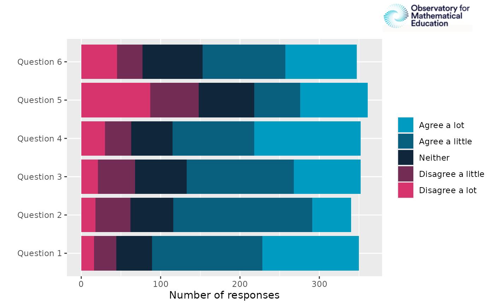

Create survey figures
Create-survey-figures.RmdThis vignette provides examples for the simple creation of survey plots across different output types
data = OMESurvey::survey_example
# Clean such that "N-A" values equal NA, fix any casing issues
for(i in 1:ncol(data)){
data[,i][data[,i] == 'N-A'] = NA
data[,i] = data[,i] |> stringr::str_to_sentence()
}Number of responses across questions in a theme
In this case we can use plot_theme() to create a
horizontal bar chart. Depending on the “Kind” argument we can create a
ggplot, a plotly figure or a formatted data frame.
OMESurvey::plot_theme(data, theme = 'Theme_1', kind = 'ggplot')
OMESurvey::plot_theme(data, theme = 'Theme_1', kind = 'plotly')
df = OMESurvey::plot_theme(data, theme = 'Theme_1', kind = 'data.frame')
df |> DT::datatable(extensions = 'Buttons',
rownames = F,
options = list(scrollY = 300,
dom = 'Bt',
buttons = c('copy', 'csv', 'excel', 'pdf'),
paging=FALSE,
ordering=F))Note that here we use default
survey_values = OMESurvey::survey_values is used to find
the expected values of the survey questions and the order to show the
answers in the legend. For custom survey values you can change the
survey_values. The function uses colours from
OMESurvey::get_OME_colours(). For the plots either a ggplot
or plotly object are returned, therefore + or |> can be used to
update the plot (e.g layout/colours, etc). Or you can create your own
plot from the data frame output.
For example if you want to swap the bar order but keep the same colourscheme.
# Use custom survey_values with the order of the values reversed
p = OMESurvey::plot_theme(data, theme = 'Theme_1', kind = 'ggplot',
survey_values = list(agree = c("Agree a lot", "Agree a little", "Neither", "Disagree a little", "Disagree a lot") |> rev()))
# Get OME colours
colo = get_OME_colours(n = 5, type = 'contrast')
# Swap to the original colour order
p + ggplot2::scale_fill_manual(values = colo |> rev(), guide = ggplot2::guide_legend(reverse = TRUE))
#> Scale for fill is already present.
#> Adding another scale for fill, which will replace the existing scale.
Note further a warning will be given if the answers to the questions do not align with the survey values. Where the unexpected answers will be set to NA (for ggplot).
data_issue = data
data_issue$Theme_1__Question_1[1] = 'Ohh Dear...'
# Use custom survey_values with the order of the values reversed
OMESurvey::plot_theme(data_issue, theme = 'Theme_1', kind = 'ggplot')
#> Warning in OMESurvey::plot_theme(data_issue, theme = "Theme_1", kind =
#> "ggplot"): The expected answers are: "Agree a lot", "Agree a little",
#> "Neither", "Disagree a little", "Disagree a lot" which does not include the
#> following found in the data: "Ohh Dear..."
Number of responses across questions in a theme with a demographic
Need to add a demographic column so extract school from the bar code.
school = data$Barcode_ID |> as.character() |> substr(3, 5)
data$school = school
school_column = ncol(data)
OMESurvey::plot_theme_by_demographic(data, theme = 'Theme_1', demographic_column = school_column, kind = 'ggplot')
OMESurvey::plot_theme_by_demographic(data, theme = 'Theme_1', demographic_column = school_column, kind = 'plotly')
# Get school information
df = OMESurvey::plot_theme_by_demographic(data, theme = 'Theme_1', demographic_column = school_column, kind = 'data.frame')
df |> DT::datatable(extensions = 'Buttons',
rownames = F,
options = list(scrollY = 300,
dom = 'Bt',
buttons = c('copy', 'csv', 'excel', 'pdf'),
paging=FALSE,
ordering=F))Adding OME logo to ggplot
You can also add the OME logo to ggplot objects using
add_logo().
Note however to do this we use the gridExtra::grid.arrange() function to add the logo into the margin which causes the object to no longer be a ggplot object. Thus, you cannot use ‘+’ to change the plot after adding the logo.
# Add logo.
OMESurvey::plot_theme(data, theme = 'Theme_1', kind = 'ggplot') |> OMESurvey::add_logo()
# Add logo, speciify position.
OMESurvey::plot_theme(data, theme = 'Theme_1', kind = 'ggplot') |> OMESurvey::add_logo(position = 'top right')
# Add logo, speciify position and sizing arguement.
OMESurvey::plot_theme(data, theme = 'Theme_1', kind = 'ggplot') |> OMESurvey::add_logo(position = 'top left',logo_sizing = c(0.3, 0.5))
Formatted bar charts from data column
We can use plot_bar() to create bar charts of a single
column within survey data.
OMESurvey::plot_bar(data, column = 5, kind = 'ggplot')
#> Warning: The `size` argument of `element_line()` is deprecated as of ggplot2 3.4.0.
#> ℹ Please use the `linewidth` argument instead.
#> ℹ The deprecated feature was likely used in the OMESurvey package.
#> Please report the issue to the authors.
#> This warning is displayed once per session.
#> Call `lifecycle::last_lifecycle_warnings()` to see where this warning was
#> generated.
OMESurvey::plot_bar(data, column = 5, kind = 'plotly')Note that you can include NA in the bar charts by using passing
arguments to table() via .... Moreover, for
ggplot outputs we can include numbers on the plot y setting
showValue = TRUE.
OMESurvey::plot_bar(data, column = 5, kind = 'ggplot', showValue = TRUE, useNA = 'always')
#> Scale for y is already present.
#> Adding another scale for y, which will replace the existing scale.